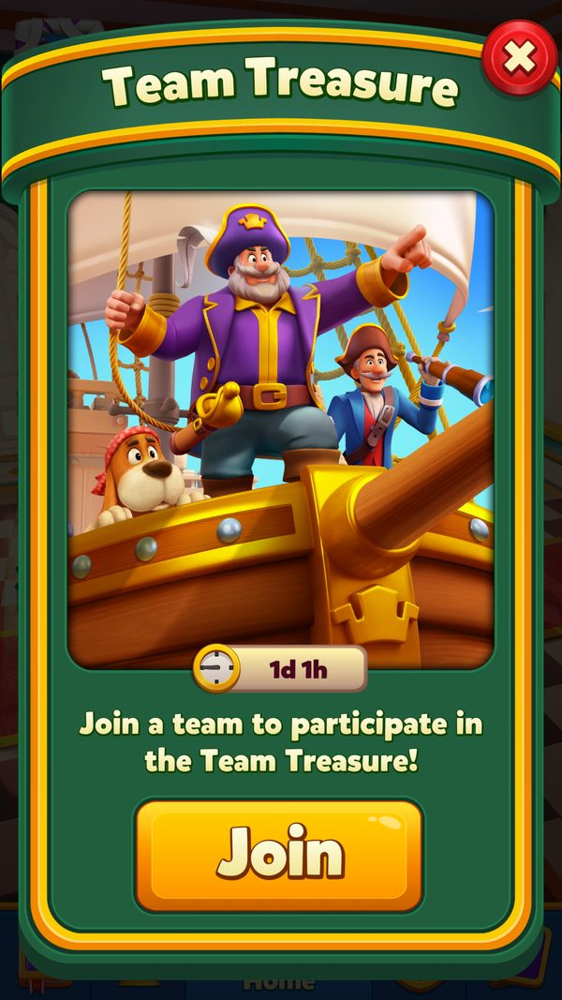

Rương Kho Báu Đội (Team Treasure)
Sự kiện hợp tác theo đội: cả đội cùng thu bánh xe để mở 3 rương chung, TOP 3 người đóng góp nhận thêm booster.
Mô tả
- Team Treasure là sự kiện hợp tác theo đội, nơi mọi thành viên cùng thu 'bánh xe' khi thắng level để đẩy chung một thanh tiến độ của đội.
- Người chơi mở khóa ở Level 23 và bắt buộc phải đang ở trong một đội; chưa có đội thì icon sự kiện không hiện.
- Thanh tiến độ có 3 rương; mỗi rương có mục tiêu riêng phụ thuộc segment sức mạnh của đội (6 segment, từ 250/500/800 đến 2500/5000/8000 bánh xe).
- Khi đội chạm mục tiêu một rương, mọi thành viên đủ điều kiện tham gia đều nhận thưởng của rương đó, không phải tranh giành nhau.
- Rương 3 ngoài booster còn kèm thưởng coin riêng theo segment đội, từ 300 C đến 1000 C.
- TOP 3 người đóng góp nhiều nhất trong đội nhận thêm phần thưởng đóng góp gồm 2 booster, loại booster tốt dần theo hạng.
- Người vào đội muộn chỉ được tính từ rương chưa mở trở đi, không ăn theo các rương đội đã mở trước đó.
- Người rời đội giữa chừng mất quyền nhận thưởng của sự kiện đang chạy, và game có cảnh báo trước khi rời.
- Bật multiplier trước level giúp nhân số bánh xe thu được, tăng tốc độ đóng góp cho đội.
- Khi hết hạn, game lấy bảng đóng góp chốt từ server để trao thưởng TOP 3, sau đó dọn tiến độ và sẵn sàng cho sự kiện kế tiếp.
Lưu ý
Tình trạng ảnh đã rà soát
Có ảnh màn hình
Gallery có ảnh game đã kiểm tra; số ảnh không biểu thị mọi trạng thái hoặc use case đã được chụp.
Rà soát ngày 08/10/2026. Xem bảng kiểm kê toàn wiki.
Ảnh chụp màn hình (3)
Chụp trực tiếp từ game đang chạy: 2026-10-06 · LDPlayer 9 · Android 9 · 1080×1920 · Royal Match v38174 · tài khoản test 2712389101 (tên sdasfdfsdf), level 11. Bấm ảnh để phóng to, dùng phím ← → để chuyển ảnh.



Mở khóa & điểm vào
TeamTreasureManager.UnlockLevel = 23 (const); get_HasEnoughLevel kiểm tra level, get_IsTeamIdValid và User.HasTeam yêu cầu người chơi phải ở trong một đội (CheckTeam log 'Has no team.'). get_IsEventValid / get_IsEventPlayable kiểm tra event còn hạn và người chơi còn được tham gia. IsAllBundlesDownloaded và GetBundleAvailableLevel điều khiển tải bundle. CanShowEventIconLocked cho phép hiện icon khoá sớm.
Điểm vào:
- Icon Team Treasure ở Home
- Popup danh sách đóng góp (TeamTreasureListPopup / TeamTreasureListPopupBundledView), InfoOrListPopupOpened(isUserAction)
- Info dialog tự động (TryAddInfoDialog)
- Dialog claim (TryAddClaimDialog)
- Deeplink 'teamtreasure'
- Cảnh báo khi rời đội (get_ShouldShowWarningInTeamLeave)
Cách hoạt động
- Đủ Level 23 và đang ở trong một đội thì icon Team Treasure hiện ở Home; game kiểm tra level, teamId hợp lệ và tải bundle (get_HasEnoughLevel, get_IsTeamIdValid, CheckTeam, IsAllBundlesDownloaded).
- Client nạp dữ liệu cục bộ từ key 'TeamTreasureLocalData' và config từ 'TeamTreasureConfig', nếu thiếu thì dùng file dự phòng team_treasure_default_config (6 segment, 3 rương) (FillFromLocal).
- Server gửi gói TeamTreasureInfo gồm eventId, thời hạn, segment đội, điểm đội và danh sách thành viên; client cập nhật config (StepCount 3, SegmentCount 6) (UpdateInfo, UpdateConfig, ShouldUpdateInfo).
- Lần đầu gặp event, game chạy tutorial ở icon và animation thu bánh xe mẫu, kèm tooltip tự động chỉ hiện một lần cho mỗi eventId (TryAddIconTutorial, ShouldShowAutoTooltip).
- Người chơi thắng level và thu bánh xe; số bánh xe cộng vào điểm cá nhân (myScore) rồi cộng vào điểm chung của đội (teamScore), và có thể bật multiplier trước level để nhân số bánh xe (WheelCollected, CanMultiply, EventsHelper.GetCollectableCountWithMultiplier).
- Sau mỗi lần thu, client gửi điểm lên server; nếu lỗi thì lưu lại và gửi lại âm thầm ở lần sau (SendUpdateRequest, RetryFailedUpdateRequest).
- Lần thu bánh xe đầu tiên khi icon chưa hiện sẽ bật chấm thông báo để nhắc mở event (trạng thái 0 = reset, 1 = cần hiện, 2 = đã hiện) (WheelCollected).
- Thanh tiến độ đội chạy qua 3 rương với mục tiêu theo segment: segment 1 là 250/500/800, segment 6 là 2500/5000/8000 bánh xe (GetTarget, ReachedTarget).
- Khi điểm đội vượt mục tiêu một rương, rương chuyển sang trạng thái mở với animation (ngưỡng animation 0.01, kích thước thanh còn lại 7.465) (WillTurnToOpenState, TeamTreasureBarProgress).
- Người chơi vào popup nhận thưởng: rương 1 cho 15 ULV, 15 UR, 15 UT, 15 ULB; rương 2 cho 30 ULV, 30 UR, 30 UT, 30 ULB, 1 H; rương 3 cho 1 PL, 1 IG cộng coin theo segment (GiveRewards, InventoryPackage.GetTeamTreasurePackage).
- Mỗi rương đã nhận được đánh dấu bằng một bit riêng (bit 0/1/2) và gửi analytics kèm eventId, teamId, segment, step, mục tiêu, số bánh xe của đội và của người chơi (TeamTreasureProgress, AnalyticsManager.TtClaim).
- Người vào đội giữa chừng được tính rương bắt đầu theo điểm đội hiện tại và chỉ tham gia từ rương đó trở đi; người rời đội bị khoá quyền nhận (GetStartingChest, CanParticipate, LeaveTeam).
- Hết thời gian, game gửi analytics kết thúc và xin bảng đóng góp chốt từ server, có cơ chế thử lại nếu chưa nhận được (EventExpired, GetFinishedEventDataFromBackend).
- Bảng đóng góp dùng Leader Type 12; hạng 1–3 và điểm cá nhân > 0 mới nhận gói 2 booster theo hạng (hạng 1 → BoosterType 3, hạng 2 → 2, hạng 3 → 1), rồi đánh dấu đã nhận (bit 30) (UserLeaderboard.GetMyRank(12), GetBoosterByRank, ClaimContributionReward).
- Cuối cùng event bị vô hiệu hoá, client báo server xoá tiến độ và reset dữ liệu cục bộ để sẵn sàng cho event mới; nếu server đã có event kế tiếp thì phiên hiện tại được coi là phiên cuối (InvalidateEvent, SendInvalidEventToClearProgress, LastSessionCompleted).
Luồng chi tiết theo code
FillFromLocal() log 'Load LocalData = {0}' đọc key 'TeamTreasureLocalData' và config từ 'TeamTreasureConfig' (fallback TextAsset 'team_treasure_default_config'); CheckTeam() log 'Has no team.' nếu chưa vào đội. Server gửi TeamTreasureInfo → UpdateInfo(info, isRefreshingProgress) log 'UpdateInfo Id:{0} - Time:{1} - Segment:{2} - Users:{3} - Progress:{4}', 'Update LocalData = {0}' (hoặc 'NewTeam LocalData = {0}', 'Team treasure players has been cleared' khi đổi đội) và UpdateConfig log 'Config = {0}', 'Config Version:{0} - StepCount:{1} - SegmentCount:{2}'; ShouldUpdateInfo(info, isNewTeam) bỏ qua với log 'There is a valid event in progress: E:{0} S:{1} Seg:{2} Tut:{3}', 'This event is already invalid:{0}', 'This is the last session of current event:{0} new:{1}'. UpdateMembers(info) ghi bảng Leader (Type = 12) qua UpdateMember → UserLeaderboard.AddOrUpdateLeader, và CheckForContributionReward(). Trong level: người chơi thu bánh xe; WheelCollected() bật thông báo icon lần đầu (iconNotificationForFirstCollectStatus). Điểm cá nhân (myScore) và điểm đội (teamScore) cập nhật qua SendUpdateRequest(progress, isValid, isClaim, useProgressEventId); nếu request lỗi thì lưu failedUpdateRequest và RetryFailedUpdateRequest() log 'Send silent claim command for failed request'. Thanh tiến độ: GetTarget(step)/GetTarget(step, segment) đọc TeamTreasureSegment.t; ReachedTarget(step, score) và GetBiggestSeenClaimableChest(score)/GetChestInProgress(score)/GetChestCountWillTurnToOpenState() điều khiển animation; TeamTreasureBarProgress dùng BarPercentages/ReducedBarPercentages/BarThresholds (TotalLeftBarSize = 7.465, ChestAnimateThreshold = 0.01). Claim: CanClaim() và GetClaimableChestCount(newCollected); GiveRewards(stepConfig, segment, prepareForAnim) → InventoryPackage.GetTeamTreasurePackage(stepConfig, segment) với source 'TT-{step}'. Contribution: CheckForContributionReward() đặt shouldAwardContribution; ClaimContributionReward(shouldSendRequest) log 'Claim contribution reward' (hoặc 'Can''t claim contribution reward: {0}') dùng UserLeaderboard.GetMyRank(12) — chỉ hạng 1..3 và myScore > 0 mới nhận, InventoryPackage.GetTeamTreasureContributionPackage với booster theo GetBoosterByRank (rank 1 → BoosterType 3, rank 2 → 2, rank 3 → 1); TeamTreasureProgress.SetContributionClaimed. Kết thúc: EventExpired() và GetFinishedEventDataFromBackend() lấy bảng chốt (get_ShouldGetFinalList, triedFinalList, elapsedTimeSinceFinalListTry, finalListCoroutine); SendFinishAnalyticsEvent(eventExpired) → TtFinish; InvalidateEvent(isClaim, showNotification) và SendInvalidEventToClearProgress() log 'Event id in progress must be invalidated: {0}'.
Phần thưởng
PHẦN THƯỞNG TEAM TREASURE (3 RƯƠNG ĐỘI)
| Mốc/Rương/Hạng | Điều kiện | Phần thưởng |
|---|---|---|
| Rương 1 | Đội đạt target rương 1 (250–2500 bánh xe tùy segment) |  ∞15 phútUnlimited Lives ∞15 phútUnlimited Lives  ∞15 phútUnlimited Rocket ∞15 phútUnlimited Rocket  ∞15 phútUnlimited TNT ∞15 phútUnlimited TNT  ∞15 phútUnlimited Light Ball (15 phút mỗi loại) ∞15 phútUnlimited Light Ball (15 phút mỗi loại) |
| Rương 2 | Đội đạt target rương 2 (500–5000 bánh xe tùy segment) | ∞30 phútUnlimited Lives ∞30 phútUnlimited Rocket ∞30 phútUnlimited TNT ∞30 phútUnlimited Light Ball (30 phút mỗi loại)  1Royal Hammer 1Royal Hammer |
| Rương 3 | Đội đạt target rương 3 (800–8000 bánh xe tùy segment) | 1Prelevel boosters 1All in-game boosters coin theo segment (300–1000 C) |
MỤC TIÊU 3 RƯƠNG THEO SEGMENT ĐỘI
| Segment đội | Target rương 1 / 2 / 3 (bánh xe) | Thưởng coin thêm của rương 3 |
|---|---|---|
| Segment 1 (đội yếu nhất) | 250 / 500 / 800 |  300Coin 300Coin |
| Segment 2 | 500 / 1000 / 1500 | 400Coin |
| Segment 3 | 1000 / 2000 / 3000 | 500Coin |
| Segment 4 | 1500 / 3000 / 5000 | 700Coin |
| Segment 5 | 2000 / 4000 / 6000 | 800Coin |
| Segment 6 (đội mạnh nhất) | 2500 / 5000 / 8000 | 1000Coin |
THƯỞNG ĐÓNG GÓP THEO HẠNG (TOP 3)
| Mốc/Rương/Hạng | Điều kiện | Phần thưởng |
|---|---|---|
| Hạng 1 | Đóng góp cao nhất đội, điểm cá nhân > 0 | 2 booster loại BoosterType 3 (loại cụ thể chưa xác định) |
| Hạng 2 | Đóng góp cao thứ 2, điểm cá nhân > 0 | 2 booster loại BoosterType 2 (loại cụ thể chưa xác định) |
| Hạng 3 | Đóng góp cao thứ 3, điểm cá nhân > 0 | 2 booster loại BoosterType 1 (loại cụ thể chưa xác định) |
| Ngoài TOP 3 / 0 điểm | Hạng ≥ 4, hoặc điểm cá nhân = 0 dù ở TOP 3 | Không có gói đóng góp (GetBoosterByRank → 0) |
CẤU TRÚC THƯỞNG DO SERVER CẤU HÌNH
| Mốc/Rương/Hạng | Điều kiện | Phần thưởng |
|---|---|---|
| steps[n].cr | Thưởng chung của rương n, mọi thành viên đủ điều kiện đều nhận | Theo TeamTreasureConfig (server) mặc định client như bảng trên |
| steps[n].sr[segment].ssr | Thưởng thêm theo segment đội của rương n (mặc định chỉ rương 3 có) | Theo TeamTreasureConfig (server) mặc định 300/400/500/700/800/1000 C |
| Gói contribution | TOP 3 đóng góp sau khi có bảng chốt | 2 booster theo hạng (server) — InventoryPackage.GetTeamTreasureContributionPackage |
Phần thưởng theo code
| Ngữ cảnh | Phần thưởng | Evidence |
|---|---|---|
| Rương 1 (target 250..2500 theo segment) | ∞15 phútUnlimited Lives ∞15 phútUnlimited Rocket ∞15 phútUnlimited TNT ∞15 phútUnlimited Light Ball | team_treasure_default_config.json steps[0].cr |
| Rương 2 (target 500..5000) | ∞30 phútUnlimited Lives ∞30 phútUnlimited Rocket ∞30 phútUnlimited TNT ∞30 phútUnlimited Light Ball 1Royal Hammer | team_treasure_default_config.json steps[1].cr |
| Rương 3 (target 800..8000) | 1 Prelevel booster 1 In-game booster coin theo segment (300/400/500/700/800/1000) | team_treasure_default_config.json steps[2].cr và steps[2].sr |
| TOP 3 đóng góp | 2 booster theo hạng (rank 1 → BoosterType 3 rank 2 → 2 rank 3 → 1) | TeamTreasureManager.GetBoosterByRank; TeamTreasureManager.ContributionBoosterCount; InventoryPackage.GetTeamTreasureContributionPackage |
| Nguồn thưởng | 'TT-{step}' | TeamTreasureManager.GiveRewards |
Số liệu chính
| Chỉ số | Giá trị | Nguồn |
|---|---|---|
| Mở khóa | Level 23 | TeamTreasureManager.UnlockLevel (const) |
| Điều kiện bắt buộc | Phải đang ở trong một đội | TeamTreasureManager.CheckTeam / User.HasTeam |
| Số rương mỗi event | 3 | TeamTreasureManager.GetTotalSteps / StepCount |
| Số segment đội | 6 | TeamTreasureConfig.segments / SegmentCount |
| Target 3 rương segment 1 | 250 / 500 / 800 bánh xe | team_treasure_default_config.json segments[0].t |
| Target 3 rương segment 6 | 2500 / 5000 / 8000 bánh xe | team_treasure_default_config.json segments[5].t |
| Thưởng rương 1 | 15 ULV, 15 UR, 15 UT, 15 ULB | team_treasure_default_config.json steps[0].cr |
| Thưởng rương 2 | 30 ULV, 30 UR, 30 UT, 30 ULB, 1 H | team_treasure_default_config.json steps[1].cr |
| Thưởng rương 3 | 1 PL, 1 IG | team_treasure_default_config.json steps[2].cr |
| Coin thêm của rương 3 | 300 / 400 / 500 / 700 / 800 / 1000 C theo segment 1→6 | team_treasure_default_config.json steps[2].sr[0..5].ssr |
| Số hạng nhận thưởng đóng góp | 3 (TOP 3) | TeamTreasureManager.ContributionRankLimit |
| Số booster trong gói đóng góp | 2 | TeamTreasureManager.ContributionBoosterCount |
| Booster theo hạng | 4 − hạng (hạng 1 → 3, hạng 2 → 2, hạng 3 → 1, ngoài TOP 3 → 0) | TeamTreasureManager.GetBoosterByRank |
| Điều kiện nhận thưởng đóng góp | hạng ∈ [1, 3] và myScore > 0 | TeamTreasureManager.ShouldGetContributionReward |
| Bảng Leader Type | 12 | UserLeaderboard.GetMyRank(12) |
| Mã event | EventType.TeamTreasure = 14 | EventType |
| Tiền tố analytics / nguồn thưởng | "TT" — source thưởng 'TT-{step}' | TeamTreasureManager.EventInitial / GiveRewards |
| Dải event id cơ bản | 256 (mở rộng bằng EventIdModMultiplier bit 20–29) | TeamTreasureProgress.EventIdLimit |
| Bit rương đã nhận | bit 0 / 1 / 2 cho rương 1 / 2 / 3 | TeamTreasureProgress (FirstChestClaimed, SecondChestClaimed, ThirdChestClaimed) |
| Bit startingChest (vào đội muộn) | bit 3–4 (giá trị 0..3) | TeamTreasureProgress.StartingChestStartIndex |
| Bit rời đội | bit 6 (leftTeam) | TeamTreasureProgress.LeftTeam |
| Bit đã nhận thưởng đóng góp | bit 30 | TeamTreasureProgress.IsContributionClaimed |
| Cờ chống gửi analytics kết thúc trùng | 4 cờ, bit 7–10 | TeamTreasureProgress (DidSendFirstFinish 7, DidSendSecondFinish 8, DidSendThirdFinish 9, DidSendNotFinish 10) |
| Tham số thanh tiến độ | TotalLeftBarSize = 7.465; ChestAnimateThreshold = 0.01 | TeamTreasureBarProgress (const) |
| Thời lượng event | endDate do server quyết định (server) | TeamTreasureInfo / TeamTreasureLocalData.endDate |
Ghi chú thiết kế
- Bật multiplier trước level giúp leo TOP 3 nhanh hơn, vì thứ hạng đóng góp xếp theo điểm bánh xe cá nhân (myScore).
- Nếu định đổi đội, hãy nhận hết rương đang mở trước — rời đội sẽ khoá quyền nhận thưởng của event hiện tại.
- Vào đội sớm khi event vừa bắt đầu để startingChest là rương 1 — vào muộn thì các rương đội đã mở trước đó không còn được tính cho bạn.
- Chỉ cần đóng góp tối thiểu (myScore > 0) là đủ điều kiện xét thưởng đóng góp; 0 điểm thì dù đội đạt mốc cuối vẫn không có gói booster.
- Đội càng mạnh thì segment càng cao: mốc khó hơn nhưng thưởng coin của rương 3 cũng tăng từ 300 C lên 1000 C.
Use case (20)
Bấm vào từng use case để mở. Mở/đóng tất cả
UC-01 Mở khóa & yêu cầu có đội
Các bước- get_HasEnoughLevel(); get_IsTeamIdValid()
- CheckTeam() log 'Has no team.' nếu chưa có đội — icon không hiện
- get_IsIconActive() / get_ShouldShowInfoButton() bật icon và nút info
- IsAllBundlesDownloaded(); GetBundleAvailableLevel()
| Actor | System |
|---|---|
| Trigger | Vào Home khi đủ level |
| Điều kiện | Level ≥ 23 và User.HasTeam |
| Kết quả | Icon rương đội hiện ở Home cho người chơi đã vào đội |
| Quy tắc / số liệu | UnlockLevel = 23. Không có đội thì không tham gia được. |
| Evidence | TeamTreasureManager.CheckTeam; TeamTreasureManager.get_IsTeamIdValid; TeamTreasureManager.get_IsIconActive; TeamTreasureManager.GetUnlockLevel; TeamTreasureManager.get_ShouldShowInfoButton; User.HasTeam |
UC-02 Nhận thông tin event từ server
Các bước- UpdateInfo(info, isRefreshingProgress) log 'UpdateInfo Id:{0} - Time:{1} - Segment:{2} - Users:{3} - Progress:{4}'
- Ghi key 'TeamTreasureLocalData' (log 'Update LocalData = {0}')
- UpdateConfig(configVersion, eventConfig) log 'Config = {0}' và 'Config Version:{0} - StepCount:{1} - SegmentCount:{2}', ghi 'TeamTreasureConfig'
- ShouldUpdateInfo bỏ qua với log 'There is a valid event in progress: E:{0} S:{1} Seg:{2} Tut:{3}', 'This event is already invalid:{0}', 'This is the last session of current event:{0} new:{1}'
- CheckForAutoInvalidation() tự huỷ event không còn hợp lệ; InformGameNotificationService() gắn tag notification
| Actor | Server |
|---|---|
| Trigger | Gói refresh chứa TeamTreasureInfo |
| Điều kiện | ShouldUpdateInfo(info, isNewTeam) |
| Kết quả | Client biết event, segment đội, điểm đội và danh sách thành viên |
| Quy tắc / số liệu | teamSegment quyết định bảng target (6 segment). |
| Evidence | TeamTreasureManager.UpdateInfo; TeamTreasureManager.ShouldUpdateInfo; TeamTreasureManager.UpdateConfig; TeamTreasureManager.CheckForAutoInvalidation; TeamTreasureManager.InformGameNotificationService |
UC-03 Thu bánh xe khi thắng level
Các bước- Bánh xe thu trong level cộng vào myScore (BeforeAfterData)
- WheelCollected() đặt iconNotificationForFirstCollectStatus = 1 (ShouldShowIconNotificationForFirstCollect) nếu icon chưa active
- SendUpdateRequest(progress, isValid, isClaim, useProgressEventId) gửi điểm lên server và UserManager.SendDataToBackend
- UpdateRequestFinished() / UpdateRequestFailed(requestModel) ghi 'TeamTreasureLocalData'; failedUpdateRequest lưu request lỗi
- RetryFailedUpdateRequest(useProgressEventId) log 'Send silent claim command for failed request' gửi lại
- SetLastSeenTeamScore(score) / GetLastSeenTeamScore() cho animation thanh
| Actor | Player |
|---|---|
| Trigger | Thắng level trong thời gian event |
| Điều kiện | get_ShouldProgress (event playable, còn tham gia được) |
| Kết quả | Điểm cá nhân và điểm đội tăng; thanh tiến độ chung nhích lên |
| Quy tắc / số liệu | Điểm là cộng dồn của cả đội — mọi thành viên cùng đóng góp vào một thanh. |
| Evidence | TeamTreasureManager.WheelCollected; TeamTreasureManager.SendUpdateRequest; TeamTreasureManager.UpdateRequestFailed; TeamTreasureManager.RetryFailedUpdateRequest; TeamTreasureManager.SetLastSeenTeamScore; TeamTreasureManager.get_ShouldProgress |
UC-04 Đội đạt target một rương
Các bước- GetTarget(step) / GetTarget(step, segment) đọc TeamTreasureSegment.t[step − 1]
- GetBiggestSeenClaimableChest(score) và GetChestInProgress(score) xác định rương
- WillTurnToOpenState(step) và GetChestCountWillTurnToOpenState() cho animation mở rương
- TeamTreasureBarProgress vẽ thanh với BarPercentages/BarThresholds; ChestAnimateThreshold = 0.01
- UpdateLastSeenBarAnimationData() ghi barLastSeenPercentage vào 'TeamTreasureLocalData'
| Actor | System |
|---|---|
| Trigger | teamScore vượt target của step |
| Điều kiện | ReachedTarget(step, score) |
| Kết quả | Rương mở, mọi thành viên đủ điều kiện có thể nhận thưởng |
| Quy tắc / số liệu | GetTotalSteps() = 3 rương mặc định; GetTotalTarget() là target rương cuối; ReachedFinalTarget() khi đạt rương 3. |
| Evidence | TeamTreasureManager.ReachedTarget; TeamTreasureManager.GetTarget; TeamTreasureManager.GetBiggestSeenClaimableChest; TeamTreasureManager.WillTurnToOpenState; TeamTreasureManager.GetTotalSteps; TeamTreasureManager.ReachedFinalTarget |
UC-05 Nhận thưởng rương
Các bước- GetClaimableChestCount(newCollected) đếm số rương có thể nhận
- GiveRewards(stepConfig, segment, prepareForAnim): InventoryPackage.GetTeamTreasurePackage(stepConfig, segment)
- UserManager.AddInventoryPackage + AddSeasonalCardCollectionPackage với source 'TT-{step}'
- Coin bay qua CoinInfoView.AddAnimationData; unlimited lives qua LifeInfoView.PrepareTextForAnimation
- TeamTreasureProgress đặt bit isFirstChestClaimed / isSecondChestClaimed / isThirdChestClaimed (bit 0/1/2)
- IsAllParticipatingChestsClaimed() kiểm tra đã nhận hết chưa
- AnalyticsManager.TtClaim(ttId, teamId, segment, step, stepGoal, teamWheelCount, userWheelCount, userRank, package)
| Actor | Player |
|---|---|
| Trigger | Bấm nhận trong popup / auto claim |
| Điều kiện | CanClaim() && CanParticipate(step) |
| Kết quả | Người chơi nhận thưởng chung của rương (cr) và thưởng theo segment (sr.ssr) nếu có |
| Quy tắc / số liệu | Rương 3 có thêm sr (segment reward) — coin tăng dần theo segment 300/400/500/700/800/1000. |
| Evidence | TeamTreasureManager.GiveRewards; TeamTreasureManager.CanClaim; TeamTreasureManager.GetClaimableChestCount; TeamTreasureManager.IsAllParticipatingChestsClaimed; InventoryPackage.GetTeamTreasurePackage; AnalyticsManager.TtClaim |
UC-06 Thưởng đóng góp TOP 3 (contribution)
Các bước- CheckForContributionReward() đặt shouldAwardContribution và ghi 'TeamTreasureLocalData'
- ClaimContributionReward(shouldSendRequest) log 'Claim contribution reward' (hoặc 'Can''t claim contribution reward: {0}')
- UserLeaderboard.GetMyRank(12) lấy hạng đóng góp trong đội
- GetBoosterByRank(myRankInTeam) = 4 − rank → rank 1 nhận BoosterType 3, rank 2 → 2, rank 3 → 1, ngoài TOP 3 → 0
- InventoryPackage.GetTeamTreasureContributionPackage tạo gói ContributionBoosterCount = 2 booster
- TeamTreasureProgress.SetContributionClaimed (bit 30); SendUpdateRequest báo server
- ShowContributionReward() log 'Show contribution reward' hiện popup; WillShowContributionReward điều khiển luồng
- RestoreContributionNotification() khôi phục thông báo nếu chưa nhận
| Actor | Player |
|---|---|
| Trigger | Event kết thúc, người chơi nằm TOP 3 đóng góp |
| Điều kiện | ShouldGetContributionReward(rank) = rank ∈ [1, 3] && myScore > 0 |
| Kết quả | TOP 3 người đóng góp nhận thêm 2 booster theo hạng |
| Quy tắc / số liệu | ContributionRankLimit = 3; ContributionBoosterCount = 2. Bảng Leader Type = 12 cho Team Treasure. |
| Evidence | TeamTreasureManager.ShouldGetContributionReward; TeamTreasureManager.ClaimContributionReward; TeamTreasureManager.GetBoosterByRank; TeamTreasureManager.CheckForContributionReward; TeamTreasureManager.ShowContributionReward; TeamTreasureManager.ContributionBoosterCount |
UC-07 Vào đội giữa chừng (starting chest)
Các bước- GetStartingChest(score, segment) tính rương đầu tiên người chơi được tham gia dựa trên điểm đội hiện tại
- TeamTreasureProgress.startingChest (bit 3..4) lưu lại
- CanParticipate(step) trả true khi step ≥ startingChest && !leftTeam
- CanParticipateEvent() = !progress.claimedBefore
- PendingTeamJoinRequestAccepted() xử lý khi yêu cầu vào đội được duyệt
| Actor | Player |
|---|---|
| Trigger | Gia nhập đội khi event đã chạy |
| Điều kiện | - |
| Kết quả | Người vào muộn chỉ nhận thưởng từ rương chưa mở trở đi, không ăn theo rương đội đã mở |
| Quy tắc / số liệu | startingChest 2 bit (0..3). |
| Evidence | TeamTreasureManager.GetStartingChest; TeamTreasureManager.CanParticipate; TeamTreasureManager.CanParticipateEvent; TeamTreasureManager.PendingTeamJoinRequestAccepted; TeamTreasureProgress.StartingChestStartIndex |
UC-08 Rời đội giữa chừng
Các bước- Hiện cảnh báo sẽ mất quyền nhận thưởng
- LeaveTeam() log 'LeaveTeam' → TeamTreasureLocalData.LeaveTeam(), đặt TeamTreasureProgress.leftTeam (bit 6)
- CanParticipate(step) trả false từ đó
- Khi vào đội mới: UpdateInfo log 'NewTeam LocalData = {0}' và 'Team treasure players has been cleared'
| Actor | Player |
|---|---|
| Trigger | Rời đội khi event đang chạy |
| Điều kiện | get_ShouldShowWarningInTeamLeave() |
| Kết quả | Người rời đội mất quyền nhận thưởng của event hiện tại |
| Quy tắc / số liệu | - |
| Evidence | TeamTreasureManager.LeaveTeam; TeamTreasureManager.get_ShouldShowWarningInTeamLeave; TeamTreasureManager.CanParticipate; TeamTreasureManager.UpdateInfo |
UC-09 Xem danh sách đóng góp
Các bước- InfoOrListPopupOpened(isUserAction) ghi 'TeamTreasureLocalData', BeforeAfterData.Consume() và SetTutorialAsSeen()
- TeamTreasurePlayerListRowData (order, leader, isMe) dựng từng dòng
- TeamTreasurePlayerSeparatorData (isContribution, isParticipation) vẽ vạch ngăn giữa nhóm TOP 3 đóng góp và nhóm còn lại
- TeamTreasureBarProgress hiển thị teamLogoView, teamName, teamScore và các rương
| Actor | Player |
|---|---|
| Trigger | Mở popup danh sách |
| Điều kiện | - |
| Kết quả | Người chơi thấy ai đóng góp nhiều nhất và ai đủ điều kiện nhận thưởng |
| Quy tắc / số liệu | Vạch ngăn phân biệt 'contribution' (TOP 3) và 'participation' (đủ điều kiện nhận rương). |
| Evidence | TeamTreasureManager.InfoOrListPopupOpened; TeamTreasurePlayerListRowData; TeamTreasurePlayerSeparatorData; TeamTreasureBarProgress |
UC-10 Kết thúc event & lấy bảng chốt
Các bước- EventExpired() gọi SendFinishAnalyticsEvent(eventExpired) và GetFinishedEventDataFromBackend()
- triedFinalList, elapsedTimeSinceFinalListTry, finalListCoroutine điều khiển thử lại
- hasFinalList trong local data đánh dấu đã có
- CheckFinishState(step) quyết định trạng thái kết thúc; SendFinishAnalyticsEvent(step, expired) → TtFinish
- CheckForFinalTargetReachedWithoutContribution() / DelayedCheckForFinalTargetReachedWithoutContribution() xử lý trường hợp đội đạt target cuối mà người chơi không đóng góp
| Actor | System |
|---|---|
| Trigger | get_IsRemainingTimeFinished |
| Điều kiện | get_ShouldGetFinalList (có đội, event hợp lệ) |
| Kết quả | Có bảng đóng góp chốt để trao thưởng contribution và gửi analytics |
| Quy tắc / số liệu | TeamTreasureProgress có 4 cờ chống gửi trùng: DidSendFirstFinish (7), DidSendSecondFinish (8), DidSendThirdFinish (9), DidSendNotFinish (10). |
| Evidence | TeamTreasureManager.EventExpired; TeamTreasureManager.GetFinishedEventDataFromBackend; TeamTreasureManager.SendFinishAnalyticsEvent; TeamTreasureManager.CheckFinishState; TeamTreasureManager.CheckForFinalTargetReachedWithoutContribution |
UC-11 Huy event & don tien do
Các bước- InvalidateEvent(isClaim, showNotification) đặt isValid = false
- SendInvalidEventToClearProgress() log 'Event id in progress must be invalidated: {0}' và gửi TeamTreasureProgress.Serialize lên server
- TryInvalidateAlreadyClaimedEvent(lastClaimedTeamTreasureId) ghi 'TeamTreasureLocalData' và BeforeAfterData.FullReset
- ResetProgress() ghi 'TeamTreasureLocalData'; ResetConfigVersion() ghi 'TeamTreasureConfig'
- showNotificationForExpiredEvent / showNotificationForContributionReward bật thông báo tương ứng
| Actor | System |
|---|---|
| Trigger | Event hết hạn hoặc không còn hợp lệ |
| Điều kiện | - |
| Kết quả | Tiến độ cũ được dọn sạch, sẵn sàng cho event mới |
| Quy tắc / số liệu | TeamTreasureProgress.EventIdLimit = 256; eventId lưu bit 11..18 kèm EventIdModMultiplier bit 20..29 để mở rộng dải id. |
| Evidence | TeamTreasureManager.InvalidateEvent; TeamTreasureManager.SendInvalidEventToClearProgress; TeamTreasureManager.TryInvalidateAlreadyClaimedEvent; TeamTreasureManager.ResetProgress; TeamTreasureProgress.EventIdLimit |
UC-12 Phiên cuối của event
Các bước- ShouldUpdateInfo log 'This is the last session of current event:{0} new:{1}' và lưu newEventToQuery
- get_ShouldShowIconForLastSession() vẫn hiện icon cho phiên cuối
- LastSessionCompleted() log 'Last session completed!' và 'QueryNewEvent:{0}' rồi hỏi server event mới
- CheckForNewEvent(teamTreasureInfo, requestModel) log 'CheckForNewEvent:{0}'
| Actor | System |
|---|---|
| Trigger | Server có event mới trong khi event cũ còn chạy |
| Điều kiện | isLastSessionOfEvent |
| Kết quả | Người chơi chơi hết phiên rồi mới chuyển event |
| Quy tắc / số liệu | - |
| Evidence | TeamTreasureManager.LastSessionCompleted; TeamTreasureManager.CheckForNewEvent; TeamTreasureManager.get_ShouldShowIconForLastSession; TeamTreasureManager.ShouldUpdateInfo |
UC-13 Force claim khi còn thưởng
Các bước- TryAddClaimDialog(origin) đẩy dialog nhận thưởng
- get_CanClaimEvent / IsEventReadyToClaim() / ForceClaimEvent() cho luồng EventDependency
- get_CantContributeAnyMore() cho biết không còn đóng góp được nữa (đã claim hết)
- get_ShouldShowIconNotification() bật chấm đỏ
| Actor | System |
|---|---|
| Trigger | Vào Home khi còn rương chưa nhận |
| Điều kiện | ShouldForceClaim() && AEventManager.CanShowAutoPopup |
| Kết quả | Người chơi được nhắc/ép nhận thưởng trước khi event bị thay |
| Quy tắc / số liệu | - |
| Evidence | TeamTreasureManager.TryAddClaimDialog; TeamTreasureManager.ShouldForceClaim; TeamTreasureManager.IsEventReadyToClaim; TeamTreasureManager.get_CantContributeAnyMore; TeamTreasureManager.get_ShouldShowIconNotification |
UC-14 Tutorial và tooltip
Các bước- TryAddIconTutorial() (trong TryAddFlowActions, origin 'flow') hiện hướng dẫn ở icon
- TryAddCollectAnimationForTutorial() log 'Should consume has added.' tạo animation mẫu
- SetTutorialAsSeen() / CompleteTutorials() / ResetTutorialSeen()
- ShouldShowAutoTooltip() dựa trên HasSpecificReward(rewardType); SetAutoTooltipSeen() / TrySetAutoTooltipSeen() ghi 'TeamTreasureLocalData'
- lastTooltipShownEventId chống hiện trùng trong cùng event
| Actor | Player |
|---|---|
| Trigger | Lần đầu gặp event |
| Điều kiện | !DidShowTutorial() |
| Kết quả | Người chơi hiểu cơ chế đóng góp theo đội |
| Quy tắc / số liệu | - |
| Evidence | TeamTreasureManager.TryAddIconTutorial; TeamTreasureManager.TryAddCollectAnimationForTutorial; TeamTreasureManager.SetTutorialAsSeen; TeamTreasureManager.ShouldShowAutoTooltip; TeamTreasureManager.SetAutoTooltipSeen; TeamTreasureManager.DidShowTutorial |
UC-15 Thông báo lần thu đầu tiên
Các bước- WheelCollected() đặt trạng thái ShouldShowIconNotificationForFirstCollect = 1
- Sau khi hiện thì chuyển DidShowIconNotificationForFirstCollect = 2
- ResetIconNotificationForFirstCollect = 0 khi event mới
- SetLastIconStateIsOpened(isOpened) / IsLastIconStateIsOpened() nhớ trạng thái rương mở
| Actor | System |
|---|---|
| Trigger | Thu bánh xe đầu tiên khi icon chưa hiện |
| Điều kiện | iconNotificationForFirstCollectStatus |
| Kết quả | Người chơi được nhắc mở event ngay sau lần thu đầu tiên |
| Quy tắc / số liệu | 3 trạng thái: 0 = reset, 1 = cần hiện, 2 = đã hiện. |
| Evidence | TeamTreasureManager.WheelCollected; TeamTreasureManager.SetLastIconStateIsOpened; TeamTreasureManager.IsLastIconStateIsOpened; TeamTreasureLocalData.ShouldShowIconNotificationForFirstCollect |
UC-16 Mở bằng deeplink
Các bước- GetDeeplinkAction() = 'teamtreasure'
- TryAddDeeplinkDialog() mở popup Team Treasure
| Actor | Player |
|---|---|
| Trigger | Link/notification 'teamtreasure' |
| Điều kiện | get_IsEventPlayable |
| Kết quả | Mở thẳng popup rương đội |
| Quy tắc / số liệu | - |
| Evidence | TeamTreasureManager.GetDeeplinkAction; TeamTreasureManager.TryAddDeeplinkDialog |
UC-17 Nhân bội bánh xe (multiplier)
Các bước- GetMultiplierTagConfig() tạo icon nhân (g__CreateTeamTreasureIcon|185_0)
- EventsHelper.GetCollectableCountWithMultiplier() nhân số bánh xe
| Actor | Player |
|---|---|
| Trigger | Bật multiplier trước level |
| Điều kiện | CanMultiply() (get_IsEventPlayable) |
| Kết quả | Đóng góp nhiều hơn cho đội mỗi level |
| Quy tắc / số liệu | - |
| Evidence | TeamTreasureManager.CanMultiply; TeamTreasureManager.GetMultiplierTagConfig; EventsHelper.GetCollectableCountWithMultiplier |
UC-18 Khóa/chặn bởi EventDependency & EventLock
Các bước- BlockEvent() / SetEventLocked(value) / IsEventReadyToLock()
- IsThereEnteredEvent() / IsEventReadyToJoin() / IsEventReadyToPlay()
- UnblockAndTryEnterEvent() khi được gỡ
- IsEventShownAtPreLevel() quyết định hiện ở Prelevel; TeamEventsHelper điều phối riêng cho event đội
| Actor | System |
|---|---|
| Trigger | Nhiều event cùng chạy |
| Điều kiện | - |
| Kết quả | Icon ẩn/khoá theo thứ tự ưu tiên event đội |
| Quy tắc / số liệu | EventType.TeamTreasure = 14; EventInitial = 'TT'. |
| Evidence | TeamTreasureManager.BlockEvent; TeamTreasureManager.SetEventLocked; TeamTreasureManager.IsEventReadyToLock; TeamTreasureManager.IsEventShownAtPreLevel; TeamTreasureManager.GetEventInitial |
UC-19 Migration dữ liệu đội
Các bước- ClearUserCaches() ghi key 'TeamTreasureTeamInfoMigrate'
- UpdateInfo cũng đọc/ghi 'TeamTreasureTeamInfoMigrate' khi phát hiện dữ liệu cũ
- ResetConfigVersion() ghi 'TeamTreasureConfig' để buộc tải lại config
| Actor | System |
|---|---|
| Trigger | Cập nhật phiên bản có cấu trúc team info mới |
| Điều kiện | - |
| Kết quả | Dữ liệu đội chuyển sang cấu trúc mới an toàn |
| Quy tắc / số liệu | - |
| Evidence | TeamTreasureManager.ClearUserCaches; TeamTreasureManager.UpdateInfo; TeamTreasureManager.ResetConfigVersion |
UC-20 Đội đạt target cuối nhưng người chơi không đóng góp
Các bước- CheckForFinalTargetReachedWithoutContribution() phát hiện tình huống
- DelayedCheckForFinalTargetReachedWithoutContribution() (coroutine) chờ dữ liệu chốt rồi xử lý
- ShouldGetContributionReward(rank) trả false vì myScore = 0 → không nhận thưởng contribution
| Actor | System |
|---|---|
| Trigger | Đội đạt rương cuối trong khi người chơi có 0 điểm |
| Điều kiện | get_ShouldGetFinalList && User.HasTeam && get_IsEventValid |
| Kết quả | Người không đóng góp vẫn nhận thưởng rương (nếu CanParticipate) nhưng không có thưởng contribution |
| Quy tắc / số liệu | ClaimContributionReward yêu cầu myScore > 0. |
| Evidence | TeamTreasureManager.CheckForFinalTargetReachedWithoutContribution; TeamTreasureManager.DelayedCheckForFinalTargetReachedWithoutContribution; TeamTreasureManager.ShouldGetContributionReward; TeamTreasureManager.ClaimContributionReward |
Cấu hình (28)
Gộp mọi nguồn: const trong code, JSON mặc định trong Resources, bảng static, storage key, AB test, cờ server.
| Nguồn | Key | Kiểu | Giá trị | Ý nghĩa | Nơi định nghĩa |
|---|---|---|---|---|---|
| code const | UnlockLevel | int | 23 | Level mở khoá | TeamTreasureManager (const) |
| code const | EventInitial | string | "TT" | Tiền tố analytics; nguồn thưởng 'TT-{step}' | TeamTreasureManager (const) |
| code const | ContributionRankLimit | int | 3 | Chỉ TOP 3 đóng góp nhận thưởng contribution | TeamTreasureManager (const) |
| code const | ContributionBoosterCount | int | 2 | Số booster trong gói contribution | TeamTreasureManager (const) |
| code const | GetBoosterByRank | BoosterType | 4 − rank (rank 1 → 3, rank 2 → 2, rank 3 → 1, ngoài TOP 3 → 0) | Loại booster thưởng theo hạng đóng góp | TeamTreasureManager.GetBoosterByRank |
| code const | Bảng Leader Type | byte | 12 | Type của Team Treasure trong bảng Leader (UserLeaderboard.GetMyRank(12)) | TeamTreasureManager.ClaimContributionReward |
| code const | TeamTreasureProgress bitfield | int | FirstChestClaimed 0, SecondChestClaimed 1, ThirdChestClaimed 2, StartingChest 3-4, ClaimedBefore 5, LeftTeam 6, DidSendFirstFinish 7, DidSendSecondFinish 8, DidSendThirdFinish 9, DidSendNotFinish 10, EventId 11-18, IsInTeam 19, EventIdModMultiplier 20-29, IsContributionClaimed 30 | Bố cục bit tiến độ | TeamTreasureProgress (const) |
| code const | TeamTreasureProgress.EventIdLimit | int | 256 | Dải event id cơ bản (mở rộng bằng EventIdModMultiplier) | TeamTreasureProgress (const) |
| code const | TeamTreasureLocalData icon notification status | byte | ResetIconNotificationForFirstCollect = 0, ShouldShowIconNotificationForFirstCollect = 1, DidShowIconNotificationForFirstCollect = 2 | Trạng thái thông báo lần thu đầu tiên | TeamTreasureLocalData (const) |
| code const | TeamTreasureBarProgress | float | TotalLeftBarSize = 7.465, ChestAnimateThreshold = 0.01 | Tham số thanh tiến độ và ngưỡng animation rương | TeamTreasureBarProgress (const) |
| json default | segments[0] | TeamTreasureSegment | s=1, t=[250, 500, 800] | Target 3 rương cho segment 1 (đội yếu nhất) | Resources/team_treasure_default_config.json (client default, server override) |
| json default | segments[1] | TeamTreasureSegment | s=2, t=[500, 1000, 1500] | Target segment 2 | team_treasure_default_config.json |
| json default | segments[2] | TeamTreasureSegment | s=3, t=[1000, 2000, 3000] | Target segment 3 | team_treasure_default_config.json |
| json default | segments[3] | TeamTreasureSegment | s=4, t=[1500, 3000, 5000] | Target segment 4 | team_treasure_default_config.json |
| json default | segments[4] | TeamTreasureSegment | s=5, t=[2000, 4000, 6000] | Target segment 5 | team_treasure_default_config.json |
| json default | segments[5] | TeamTreasureSegment | s=6, t=[2500, 5000, 8000] | Target segment 6 (đội mạnh nhất) | team_treasure_default_config.json |
| json default | steps[0].cr | TeamTreasureReward[] | 15 ULV + 15 UR + 15 UT + 15 ULB | Thưởng chung rương 1 | team_treasure_default_config.json |
| json default | steps[1].cr | TeamTreasureReward[] | 30 ULV + 30 UR + 30 UT + 30 ULB + 1 H | Thưởng chung rương 2 | team_treasure_default_config.json |
| json default | steps[2].cr | TeamTreasureReward[] | 1 PL (Prelevel booster) + 1 IG (In-game booster) | Thưởng chung rương 3 | team_treasure_default_config.json |
| json default | steps[2].sr[0..5].ssr | TeamTreasureReward[] | segment 1: 300 C; 2: 400 C; 3: 500 C; 4: 700 C; 5: 800 C; 6: 1000 C | Thưởng coin thêm của rương 3 theo segment đội | team_treasure_default_config.json |
| config class | TeamTreasureConfig.segments / steps / version | TeamTreasureSegment[] / TeamTreasureStep[] / int | server | Bảng target theo segment và bảng thưởng theo rương | TeamTreasureConfig |
| config class | TeamTreasureStep | class | s (số rương), cr (thưởng chung), sr (TeamTreasureSegmentReward[] — mỗi phần tử có ssr) | Cấu trúc một rương | TeamTreasureStep / TeamTreasureSegmentReward |
| server info | TeamTreasureInfo | flatbuffer | server | eventId, thời hạn, teamSegment, danh sách TeamTreasureUserInfo, teamScore, config | Protocol/TeamTreasureInfo |
| storage key | TeamTreasureLocalData | string | - | eventId, endDate, teamScore, progress, teamSegment, isValid, myScore, serverEventId, isEventNew, barLastSeenPercentage, lastSeenTeamScore, failedUpdateRequest, iconNotificationForFirstCollectStatus, hasFinalList, shouldAwardContribution, isLastIconStateIsOpened, lastTooltipShownEventId | UserKeyValue |
| storage key | TeamTreasureConfig | string (JSON) | - | Config event do server gửi | AppKeyValue (UpdateConfig / ResetConfigVersion) |
| storage key | TeamTreasureTeamInfoMigrate | - | - | Cờ migration dữ liệu đội | TeamTreasureManager.ClearUserCaches / UpdateInfo |
| asset | team_treasure_default_config | TextAsset | Resources/team_treasure_default_config.json | Config dự phòng (6 segment, 3 rương) | TeamTreasureManager.FillFromLocal |
| code const | EventType.TeamTreasure | enum | 14 | Mã event | EventType |
Số liệu đo trên máy
Team Treasure đo trên máy (06/10/2026)
| Mục | Trên máy | Đối chiếu config |
|---|---|---|
| Điều kiện | Chỉ hiện sau khi vào đội | User.HasTeam; UnlockLevel = 23 |
| Thời lượng còn lại | 2d 17h lúc 21:30 06/10 | server |
| Mốc rương của đội này | 400 / 800 / 1200 | steps target 250..2500 / 500..5000 / 800..8000 theo segment |
| Thưởng rương 1 | 15' ∞ mạng + 15' ∞ Rocket, TNT, Light Ball | steps[0].cr — khớp |
| Cảnh báo | "Not getting rewards without contribution!" | chỉ người có đóng góp nhận thưởng |
Config server (live)
⏳ Config của event này do server quyết định và chỉ lấy được khi event đang chạy trong lịch. Thời điểm harvest (08/10/2026) event không active → request Get*Info trả HTTP 500 / EventDeleted, không lấy được giá trị live. Cấu trúc/field của config (từ code) vẫn xem được ở mục Cấu hình phía trên; giá trị live sẽ bổ sung khi event lên lịch lại. Chi tiết probe: facts/runtime/server-logic-probes.md.
Backend / server
| Command | Chiều | Mục đích |
|---|---|---|
TeamTreasureInfo (gói refresh) | server→client | event id, thời hạn, segment đội, điểm đội, danh sách thành viên, config |
SendUpdateRequest(progress, isValid, isClaim, useProgressEventId) | client→server | gửi điểm đóng góp và trạng thái claim; có cơ chế lưu và gửi lại khi lỗi |
GetFinishedEventDataFromBackend | client→server | lấy bảng đóng góp chốt |
SendInvalidEventToClearProgress | client→server | báo server xoá tiến độ của event không hợp lệ |
CheckForNewEvent(teamTreasureInfo, requestModel) | client→server | hỏi event mới sau phiên cuối |
Giao diện (UI)
| Element | Class | Mục đích |
|---|---|---|
| Icon Home | Royal.Scenes.Home.Ui.Dialogs.TeamTreasure (AIconView) | hiện điểm đội, rương, đếm ngược |
| Thanh tiến độ đội | TeamTreasureBarProgress + TeamTreasureBarRewardView + TeamTreasureRewardConfig (barView, percentage, isReached) | 3 rương trên một thanh, teamLogoView + teamName + teamScore |
| Popup danh sách | TeamTreasureListPopup / TeamTreasureListPopupBundledView | bảng đóng góp thành viên |
| Dòng người chơi | TeamTreasurePlayerListRowData (order, leader, isMe) | một dòng trong bảng |
| Vạch ngăn | TeamTreasurePlayerSeparatorData (isContribution, isParticipation) | phân nhóm TOP 3 đóng góp và nhóm tham gia |
| Container thưởng | TeamTreasureRewardContainerView | hiển thị thưởng của rương |
Analytics (3)
| Event | Tham số | Khi nào |
|---|---|---|
TtClaim | ttId, teamId, segment, step, stepGoal, teamWheelCount, userWheelCount, userRank, InventoryPackage | nhận thưởng rương / contribution |
TtFinish | ttId, teamId, segment, step, stepGoal, teamWheelCount, userWheelCount, userRank, InventoryPackage | event kết thúc (4 cờ chống gửi trùng theo step) |
DialogTimeSpent | eventInitial = 'TT', timeSpentSeconds | đóng popup |
Storage keys
TeamTreasureLocalData TeamTreasureConfig TeamTreasureTeamInfoMigrate
Chưa đọc được / ghi chú
- Segment của đội do server gán (teamSegment) — phụ thuộc sức mạnh/quy mô đội.
- Số bánh xe thu mỗi level do level design/goal.
- Thời lượng event do server (endDate).
- BoosterType enum: giá trị 1/2/3 tương ứng loại booster nào chưa xác định chính xác trong dossier.
- BarPercentages / ReducedBarPercentages / BarThresholds là mảng float trong prefab UI, không đọc được giá trị từ code.
Tính năng liên quan
Team Tournament Team Battle (TB) Đội (Team) Sưu tập thẻ mùa (SCC) Khung sự kiện (Events) EventLock
Nguồn đã đọc
- GameDesign/features/TeamTreasureManager.md
- GameDesign/05-Events.md (mục TeamTreasure)
- RecoveredNative/PseudoC/Assembly-CSharp/Royal/Player/Context/Units/TeamTreasureManager.c
- UnityExport/ExportedProject/Assets/Scripts/Assembly-CSharp/Royal/Player/Context/Data/Persistent/TeamTreasure*.cs
- UnityExport/ExportedProject/Assets/Resources/team_treasure_default_config.json
- UnityExport/ExportedProject/Assets/Scripts/Assembly-CSharp/Royal/Infrastructure/Services/Analytics/AnalyticsManager.cs